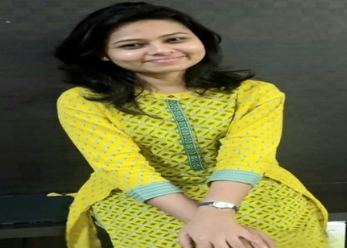

Meet The Fellows
Check out the public pedagogy projects by the CW 206(Critical Writing: Education, Literacy and Justice) cohort
Aaliyah Ali Khan
Grief LiteracyThe video demonstrates the experience of grief through movement. These movements signify different stages of grief like shock, denial, bargaining, frustration, the struggle...
Annet Mary Thankachan
The Dialogue SeriesDialogue is a crucial determinant in a student-teacher interaction. But, in the Indian educational system meaningful interactions between teachers and students...
Apala Mandal
If You Can Speak, You Can Sing“Remember when we’d sing, just for the love of it?” To Noise Making, by Hozier. Most of us would be uncomfortable singing in front of others, or even singing at all. Strong...
Ashok
Blame It On SchoolEducation as we know it today only came into being a few centuries ago with the advent of industrialization. This modern education lies on the foundation of Human capital theory and is often positioned as the panacea to all modern anomalies in human...

Asmita Sethi
Disability and EducationThe life of a student with a disability is not an easy one. The simplest of tasks that we often take for granted or don’t even pay attention to also take a lot of effort for them. Additionally, students with disabilities not only face challenges at an...
Baidehi Ghosh
In The MakingAnyone can learn anything. If the first thought when the words ‘engineer’ is said and you think of a nerdy guy in a hoodie, eating pizza, then this video is for you. Patriarchy can seep deep into all our imagination. Through this video project, we aim to...
Chhavi Kumar
Stories of Homeschooling Folks with ChhaviA podcast series with parents in India who have embarked upon their journey and chose to provide alternative education to their children by choosing to homeschool or unschool their kids. While the trend of homeschooling is picking up in India, several doubt...
Devika Mahapatra
Be HeardFor my public pedagogy assignment, I interviewed 9 individuals. We spoke about a variety of topics revolving around incidents that have occured in their educational institutes and how that affected their mental health and had long lasting effects. We spoke...
Geetha Thatikonda
Evolve Through ArtArt is one of the first forms of visual expression and language in children. It is a beautiful medium that allows one to express their emotional content. Art education has the potential to foster creativity and imagination in students which encourages children...

Gyan Bhaskar Maithani
Privilege in Educational SpacesThe project shows the struggle of a student who belongs to a different background. The first day the protagonist said no, when her friends decided to go to the dhaaba. This was because she realized that she did not have enough money to eat at the dhaaba and...
Honey Gairola
Daydreams: Living a life I never livedOur brain is wondrous and the activities it can perform are phenomenal. Through this project, I intended to delve deeper into this commonly encountered but scantily researched topic of daydreaming, with a quest to understand the nuances of it...

Komal Bhandana
Kisse interviews keInterviews are designed in such a manner which favors the students coming from upper middle class and thus leaving behind the ones from the marginalized communities. It happens in the form of proficiency in English language, caste, social background,...
Manaswini NC
Creating Visual Literacy in Educational SpacesThis video is a compilation of narratives of significantly visual learners and explores how they utilise visual mediums to learn and process information. The interviewees are associated with various visual techniques such as fine art, sketch noting,...
Nikita Aage
Emotions in EducationThe intention behind the theme 'Emotions and Feelings in Education' stems from my own personal experience of schooling and specifically professional cricket. The environment there pushed people to suppress their emotions and always behave in a certain way despite having so many...
Paridhi Kapil
Rethinking climate education in the face of climate changeThrough my public pedagogy, I aim to explore how climate education in our country has not kept pace with the climate change that is looking at us in the eye. One of the key pillars toward combating climate change is education and the torchbearers are the...
Poorvi Gupta
Memories of PartitionMy project is a website called ‘memories of partition: an art and literature library’. The idea is to create a repository of partition related resources or recommendations including books (both fiction and non-fiction), poetry, podcasts, films and also...

Revathy K J
Human Rights Training Modules For The People Who Are Away From SchoolsWhat is the actual aim of human rights education in India if the people who should be the primary recipients of it are denied access to it?- This question led me to the idea of this project.My public Pedagogy project aims at the creation...
Rishika Rastogi
Project IkraarSometimes we feel disconnected, other times we feel excluded, and often we don't feel like belonging! We feel the power dynamics and the domination by the elite system over the question of identity you are facing daily in the university spaces. We feel we are...
Riya Arolkar
ArtyEduThe NCERT Curricular Framework envisioned certain values, outcomes, and for art education in India. However, reality looks nothing like it. According to existing literature, the current day practices of art pedagogy are rooted in...
Riya Baheti
How do we help in inclusive education for people with disabilities?The project is an initiative aimed at helping children with disabilities feel inclusive in all kinds of schools. The website has resources for family, teachers and peers on how they can make the child feel inclusive in a school environment. It also has blogs highlighting the challenges faced by children with disabilities in an inclusive school...

Saman Waheed
The Barriers faced by Muslim Women on their Path to Educational Mobility in IndiaThis is a documentary-style video that tries to explore The Barriers Faced by Muslim Women on their Path to Educational Mobility in India. For this purpose, I spoke to three urban Muslim...
Sejal Chandrafari
Fluid BordersFluid borders was an attempt to make the people around engage with different cultural backgrounds by introducing them to multicultural literature. Since this introduction is basically to promote cultural awareness in the current...
Shubham Rathore
What is social justice?My project aims to create a platform to educate people about social justice. For this project, I have interviewed people to understand their understanding about social justice and how they relate it with their surroundings.
Sloka Kasapuram
Challenges in Education due to COVID-19How has learning changed after the pandemic? Is taking classes really easier online? What methods of online learning work, and what methods are failing? Have there been any long-term effects of spending a whole academic year...
Srishti Agrawal
The Gravitas of CoachingMy project endeavors to uncover the reasons behind the boom observed in the Indian coaching industry. Through a series of interviews with an array of diverse students, coming from all walks of life and of different ages, I attempt to analyze their
Sweja Ramachandran
Analysing the politics in performing arts through BharatnatyamThis initiative attempts to analyse and address existing difficulties and issues in classical dance learning and performing venues (with a focus on Bharatanatyam), such as history, politics, body image, gender, and so on. Towards...
Vaishnavi Gupta
On an education in emotionsThis dictionary is an attempt at helping us learn a language that allows us to have better relationships with who we are and those around us. Think of an apple. If you would’ve never known what an apple is, what it looks like or what it does, you wouldn’t
Vishwajeet Mishra
Psychopolitics of our times and new-ish ways to do praxis?I tried to have conversations with my friends about the ideas that I discussed in my essay about neoliberal psychopolitics and effective ways to do revolutionary propaganda. Conversations were about how they developed their political literacy, hidden

Vrushali Ghatpande
Parental Involvement in the Education of ChildrenThe topic of the video is parental involvement in the education of children. Research has shown that parental involvement is extremely important in the academic performance of the children and for their overall personality development. Parental involvement
Wangchok Namgail
Edu Talk PodcastIn this series of few episodes, we shall explore the different factors that would affect students’ learning experience and outcomes. I am joined by different people having a variety of experiences of being a teacher or of being a part of an educational institution who would be...